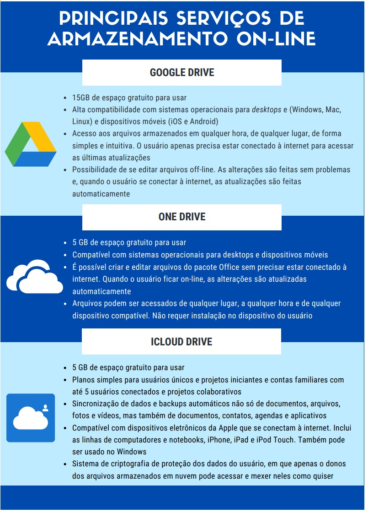
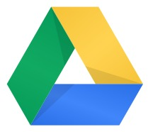
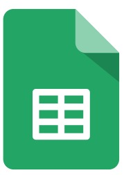
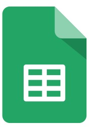
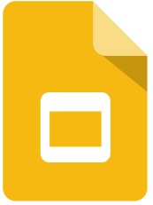
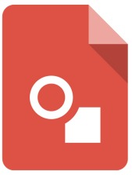
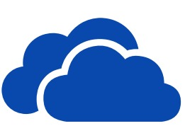
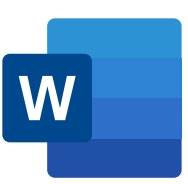
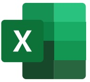
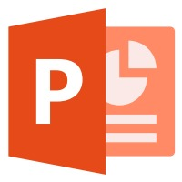

Armazenamento e trabalho na nuvem
Aposto que você já ouviu expressões do tipo: “Meus arquivos estão na nuvem”, ou “quando tiro uma foto no meu celular ela vai direto para nuvem”, ou mesmo “costumo trabalhar na nuvem”. Mas o que realmente isto significa?

De acordo com o blog da weblink, o armazenamento na nuvem é uma tecnologia recente que permite que o usuário de internet guarde todos os seus dados em um servidor on-line em vez de salvar nas pastas e discos rígidos de seu computador. Este tipo de armazenamento pode trazer muitas vantagens, como:
1 - Redução de custos e menos dispositivos. Armazenar arquivos em discos rígidos físicos (HDs) está cada vez mais ultrapassado. Na nuvem, tudo fica em um servidor digital, o que faz com que o usuário não precise investir dinheiro comprando novos eletrônicos ou acessórios para guardar seus arquivos. O resultado é menos gastos, menos dispositivos e mais espaço recebido, muitas vezes sem pagar nada por isso, inclusive.

2 - Dinamismo e mobilidade. Usar um serviço de armazenamento na nuvem garante muita praticidade, dinamismo e mobilidade nas tarefas do dia a dia. Você pode acessar arquivos de qualquer lugar e de qualquer tipo de aparelho compatível. É recomendado ter uma conexão estável à internet.
3 - Segurança de dados. Uma das grandes preocupações dos usuários quanto ao armazenamento em nuvem é a segurança de dados. Ninguém quer pôr em risco seus arquivos pessoais e profissionais. Porém, na nuvem, apenas o usuário tem acesso ao seu próprio material (por meio de login e senha pessoais) e nem mesmo as empresas que oferecem esses serviços sabem o quê esses conteúdos são.
4 - Projetos colaborativos. Se o usuário quiser, pode permitir o acesso de outros usuários aos seus arquivos. Essa é uma maneira de compartilhar e desenvolver projetos colaborativos que precisem de muitas pessoas envolvidas. E os participantes do projeto nem precisam sair de casa para trabalhar, já que tudo é feito em conjunto pela internet.
Os ganhos são na produtividade e na agilidade das tarefas. Isso é muito útil para o campo educacional, inclusive, pois permite que colegas façam trabalhos em grupo, editando ao mesmo tempo um único arquivo, por exemplo.
5 - Dispensa instalação. A grande maioria dos aplicativos e softwares exigem instalação no dispositivo do usuário para funcionar. Esse não é o caso do armazenamento em nuvem. É possível acessar planilhas, editores de texto, calendários, agendas, editores de imagens e multimídias sem precisar instalar nada.
Várias plataformas atualmente oferecem o serviço de armazenamento on-line e de forma gratuita, veja algumas destas opções:
Você sabia que, além do armazenamento de arquivos, é possível trabalhar, usar aplicativos, fazer trabalhos da escola, assistir videos, guardar preferências de navegação, tudo isso sem armazenar nada no seu computador, além de ficar disponível em qualquer lugar e a qualquer hora do dia? Sim, isso é possível e cada vez mais comum. Provavelmente você já faz isso e nem se dá conta!
Já se perguntou onde ficam armazenados os seus e-mails? Ou mesmo onde ficam os vídeos que você assiste no YouTube ou no Netflix? E como será que conseguimos ter a mesma informação do nosso perfil do Facebook ou do Instagram em diferentes dispositivos? Isso acontece porque esses dados não ficam armazenados localmente, ou seja, exclusivamente no seu computador ou smartphone, mas sim em data centers espalhados ao redor do mundo, denominados de nuvem.
O teletrabalho e o ensino remoto se tornaram realidade em 2020 e com eles, a necessidade de trabalhar e estudar usando recursos e ferramentas on-line. Compreender quais são essas ferramentas e suas funcionalidades básicas é importante para se desenvolver ações de caráter coletivo e colaborativo. Vamos conhecer um pouco melhor as principais ferramentas que podem ser usadas na nuvem?
Aplicativos Google
O Google Drive concentra os programas de criação e edição do Google como o Documentos, Planilhas, Apresentações, Desenhos, dentre outros. É uma ferramenta de armazenamento em nuvem e sincronização do Google que possibilita ao usuário elaborar diversos tipos de documentos
por meio da web gratuitamente, podendo acessá-los a qualquer momento e em qualquer lugar utilizando um smartphone, tablet ou computador. Para tanto, o usuário precisa ter uma conta de e-mail registrada no Google (a mesma do Gmail). Além disso, o Google Drive é uma ferramenta colaborativa em tempo real, ou seja, permite que um grupo de pessoas construam documentos simultaneamente on-line e o mais importante, sem se preocupar com o botão “salvar”, pois as alterações nos documentos são salvas automaticamente.
Documentos Google é um editor de texto compatível com o Word (.DOC e .DOCX), com Open Document Format (.ODT) e Páginas Apple (PAGES). Com ele você pode elaborar documentos a partir de uma página em branco ou utilizar formatos pré-existentes, tais como: Planos de Aula, Relatórios, Proposta de Projetos e muito mais. É possível fazer download do documento em vários formatos, sendo os mais comuns: .DOCX, .ODT e .PDF.
 

Planilhas Google é um editor de planilhas compatível com o Microsoft Excel (.XLS e .XLSX) e Open Document Format (.ODS). Com ele você pode criar e editar tabelas, gráficos coloridos e planilhas de cálculo com fórmulas integradas e uma série de opções de formatação que podem tornar o documento dinâmico e de fácil compreensão. É possível fazer download da planilha em vários formatos. Os mais comuns são: .XLSX, .ODS e .PDF.
Apresentações Google, compatível com o Microsoft Power Point (.PPT e .PPTX) Open Document Format (.ODP). Com o Apresentações Google você pode criar apresentações com diversas formatações, podendo incluir vídeos, animações e vários outros recursos de modo a dinamizar e proporcionar interatividade aos seus trabalhos e apresentações. É possível fazer download da apresentação em vários formatos. Os mais comuns são: .PPTX, .ODP e .PDF.
 Com o Desenhos Google você pode criar imagens, formas, diagramas, fluxogramas e adicioná-los posteriormente a outros documentos. É uma ferramenta muito simples de usar, similar ao tradicional “Paint” do Windows. É possível fazer download da imagem nos formatos .JPEG, .PNG, .PDF e até mesmo .SVG (gráficos vetoriais escaláveis).
Microsoft Office 365
Similar ao Google Drive, o OneDrive é o serviço de armazenamento de dados (documentos) em nuvem da Microsoft. Por meio dele é possível criar, armazenar e compartilhar todo tipo de documento através de dispositivos (smartphone, tablet ou computador),
desde que o usuário possua uma conta de e-mail registrada na Microsoft e esteja conectado à rede de internet. No OneDrive temos o Office online. Ele é a versão on-line dos aplicativos de edição de documentos da Microsoft Office, ou seja, a versão on-line do Word, Excel, PowerPoint, OneNote e Calendário. Como no Google Documentos, no Office online o usuário pode criar, editar e também trabalhar em equipe simultaneamente, sendo que as edições nele realizadas são salvas automaticamente e de forma segura.
Word online, com uma seleção de diversos modelos à disposição do usuário, no Word online é possível criar e editar documentos através de ferramentas muito similares àquelas presentes no Word como, por exemplo, adicionar imagem, tabela, símbolos, formatar a fonte da letra, adicionar recuo de texto e espaçamento entre linhas e muito mais.
No Excel online são muitos os modelos que o usuário tem a sua disposição. Para elaboração de material didático é possível criar diversos tipos de gráficos e tabelas, formatando-as com o uso de ferramentas similares às utilizadas no Excel.
 No Excel online são muitos os modelos que o usuário tem a sua disposição. Para elaboração de material didático é possível criar diversos tipos de gráficos e tabelas, formatando-as com o uso de ferramentas similares às utilizadas no Excel.
Aplicativos diversos
Existem diversos aplicativos on-line que podem ser úteis no dia a dia para estudos ou mesmo para realizar tarefas no trabalho. Listaremos alguns a seguir:
Combinar ou dividir arquivos no formato PDF
É comum precisarmos separar páginas em arquivos PDF ou mesmo juntar arquivos distintos em um único PDF. Para isso, há alguns serviços disponíveis na internet, como o Smallpdf, por exemplo. Tudo é feito no próprio site, sem necessidade de download e instalação de aplicativo, também não é necessário cadastro no site. Endereço:
- Juntar arquivos PDF: https://smallpdf.com/pt/juntar-pdf
- Dividir arquivos PDF: https://smallpdf.com/pt/dividir-pdf
Existem outros serviços disponíveis na internet e que realizam a mesma função. Faça uma busca no Google e descubra!
Canva
É uma plataforma on-line de design gráfico que permite que você crie, por exemplo,
infográficos, apresentações, pôsteres, banners, apostilas, livros e diversos objetos
gráficos para o uso tanto na escola quanto no trabalho. A plataforma possui uma
versão gratuita que é limitada, mas dispõe de muitos recursos para iniciantes.
Endereço:
https://www.canva.com/
Padlet
É uma plataforma on-line voltada para criação de murais, documentos, projetos
colaborativos e páginas da web de forma simples e intuitiva. O Padlet é uma
ferramenta colaborativa e permite que seus murais sejam publicados na internet e
fiquem disponíveis a outras pessoas.
Endereço:
https://pt-br.padlet.com